Partes
La pierna es un grupo múscular muy grande que permite realizar muchas funciones como la extensión y flexión de rodilla, la aducción y abducción del tren Inferior, etc. Para esto, se emplean diversos musculos como por ejemplo:
- Cuadriceps
- Isquiotibiales
- Pantorrillas
- Gluteo
- Aductores
Cuadriceps
Los cuadriceps son un grupo compuesto por 4 músculos principales que se encargan de la extensión de rodilla, por lo tanto, para ejercitarlo se realizan movimientos que cumplan ese patrón. Por ejemplo:
- Sentadilla
- Hack Squat
- Extensión en Maquina
- Prensa 45°
- Estocadas
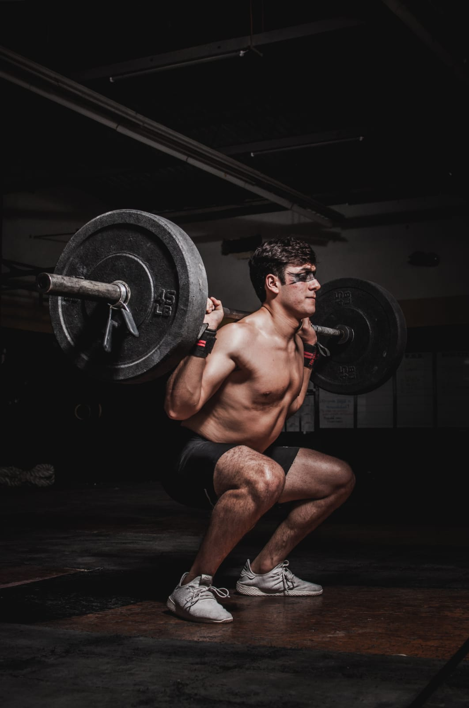
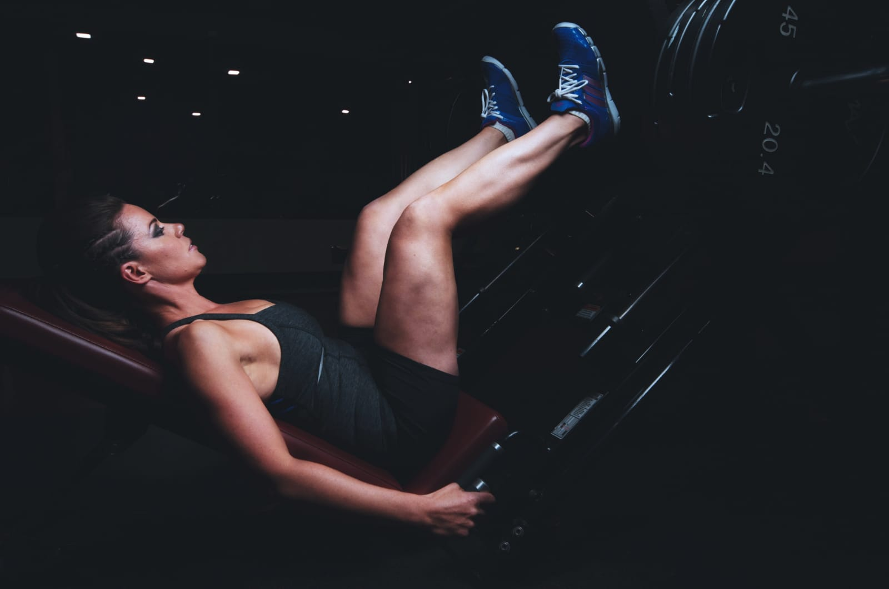
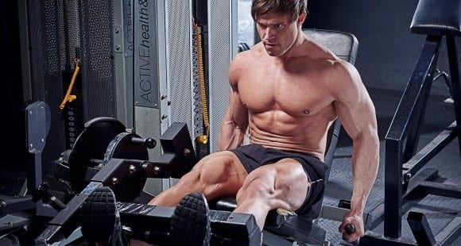
Isquiotibiales
Los Isquiotibiales son los músculos que se encuentran en el tren posterior, por detras de los Cuadriceps; estos se encarga de flexionar la rodilla y contribuyen a extender la cadera. Los mejores ejercicios para su óptimo desarrollo son:
- Curl Femoral Acostado
- Curl Femoral Sentado
- Curl Nórdico
- Peso Muerto Rumano
Hay que destacar que el Peso Muerto Convencional o Rumano logran un efectivo trabajo de los Femorales, aunque también sirven para desarrollar músculos de la Espalda baja y alta como los trapecios o erectores de cadera.
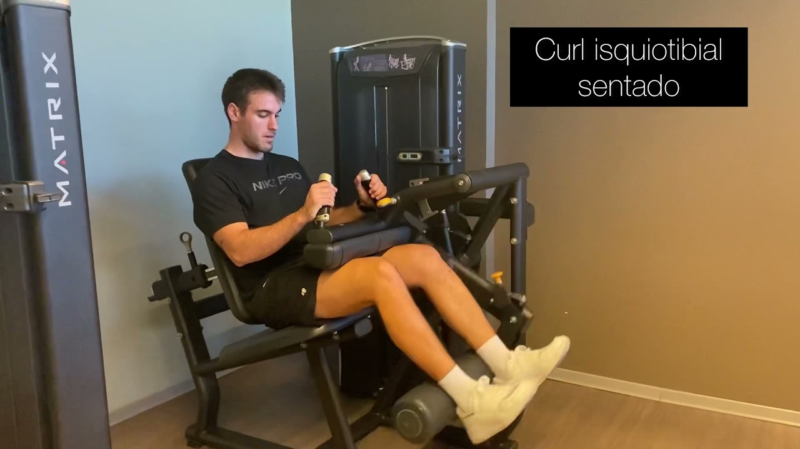
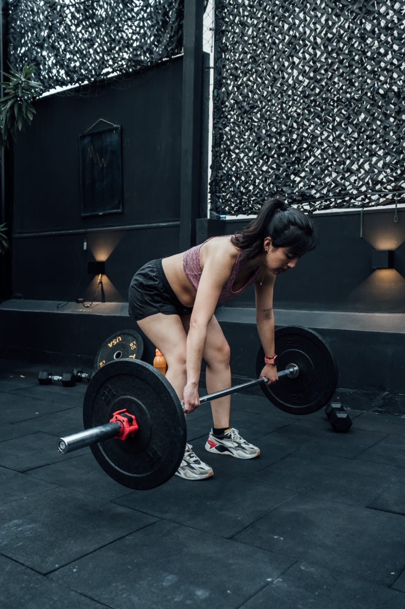
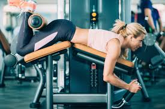
Pantorrillas
Las Pantorrillas son un grupo compuesto por el Soleo (Anterior) y los 2 gemelos (Posterior), que se encargan de elevar y flexionar el talón; por lo tanto, para ejercitarlo se realizan elevaciónes de talón con diversas cargas
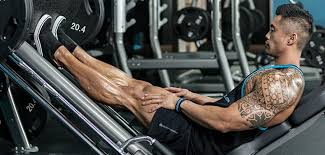
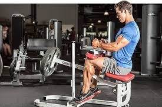
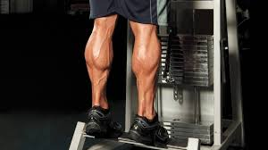
Gluteos
Los Glúteos son 2 pares de músculos que cumplen diversas funciones con respecto a la abducción, extensión de cadera y rotaciones internas o externas.
Si bien el glúteo se compone por 3 músculos con distintas funciones, podemos entrenarlo de forma eficiente mediante ejercicios como:
- Hip Thrust
- Sentadilla Búlgara
- Patadas de Glúteo
- Patadas Laterales
- Sillón Abductor
- Peso Muerto
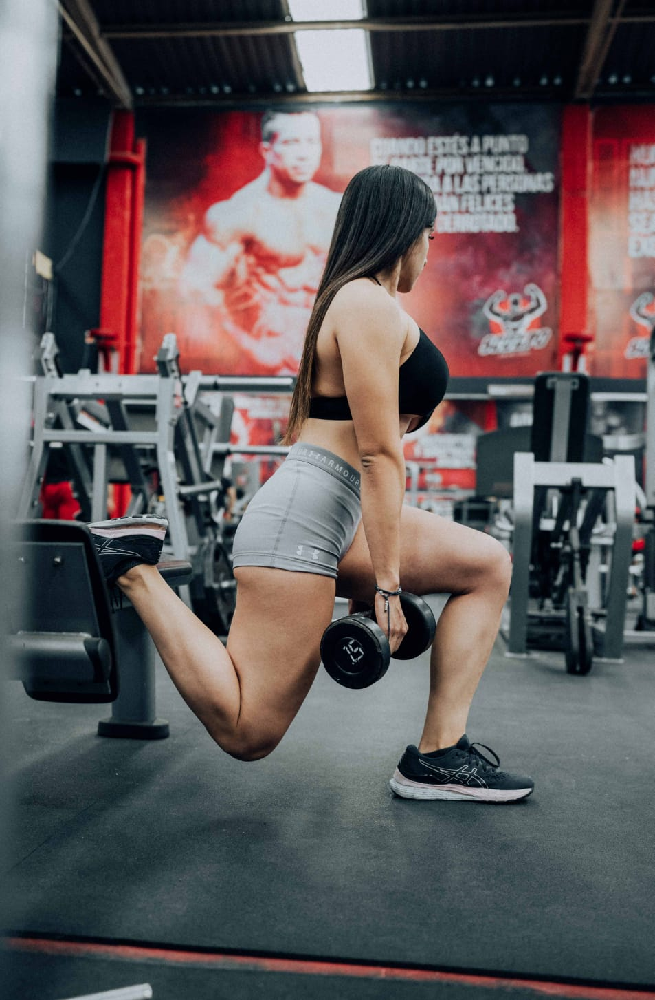
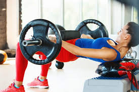
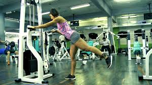
Aductores
Los aductores son músculos que permiten realizar una aducción en la pierna, es decir, permiten dirigirla en dirección medial.
Para entrenar estos músculos podemos realizar los siguientes ejercicios:
- Sillón Aductor
- Aducciónes con Bandas
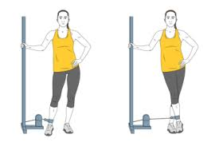
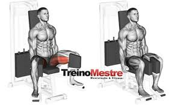
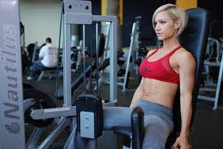